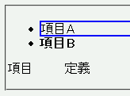
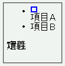

HTML4において終了タグを省略できるブロック要素の一部（dt, dd, li）では、内容物を無視したスタイル適用が行われてしまう。
<ul> <li style="border:2px solid blue;">項目A</li> <li style="font-weight:bold;">項目B</li> </ul> <dl> <dt style="display:inline;">項目</dt> <dd style="display:inline;">定義</dd> </dl>
li要素にはボーダー設定と太字指定を行っています。dt要素とdd要素はインライン要素として表示させています。
Moz1.0での表示
NN4.78での表示
フォント、ボーダー、背景関連のプロパティが無視されるバグについては子孫要素に指定することで対処可能です。ただし、バグを回避するためだけに子孫要素をおくことはあまりお勧めできません。
<ul> <li><div style="border:2px solid blue;">項目A</div></li> <li><span style="font-weight:bold;">項目B</span></li> </ul>
NN4.78では不具合の発生が確認されました。